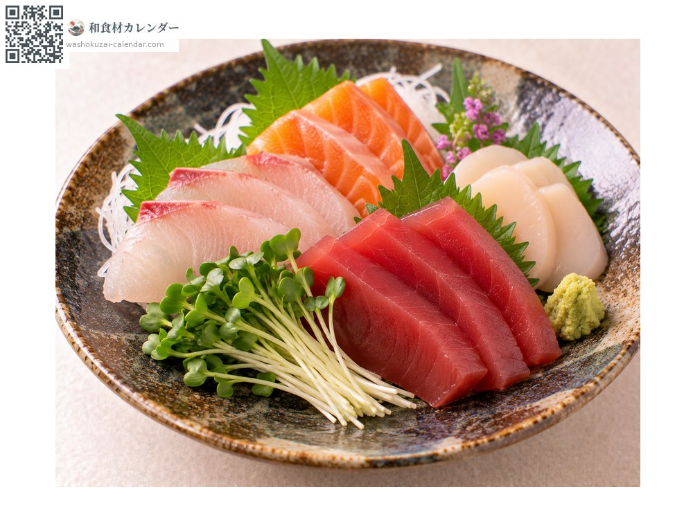
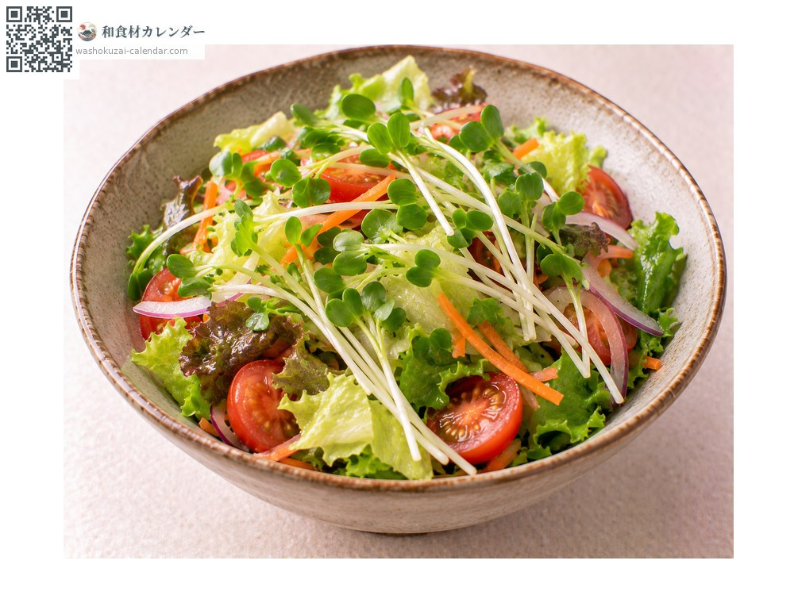
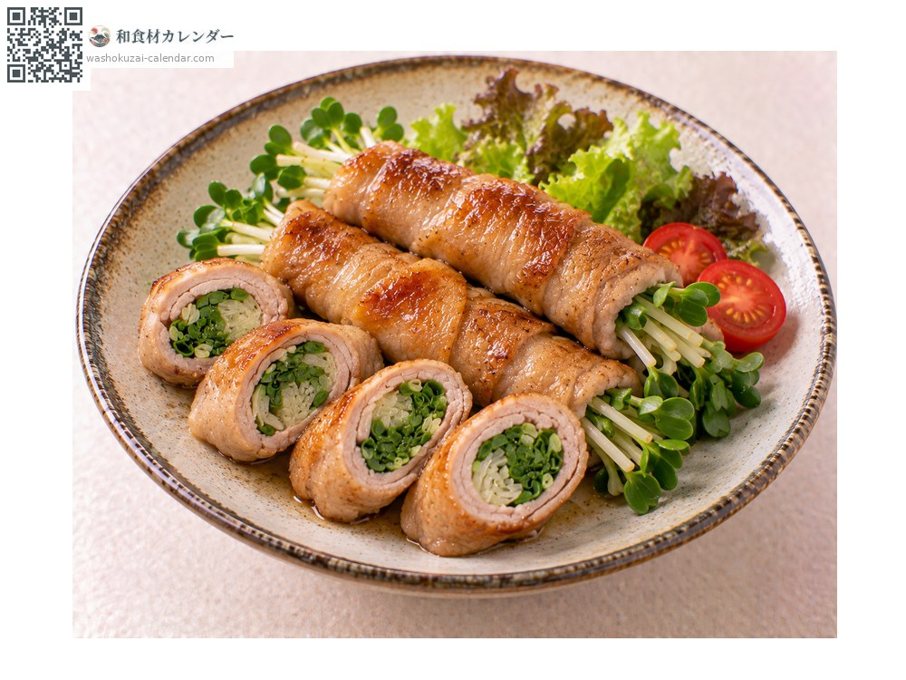
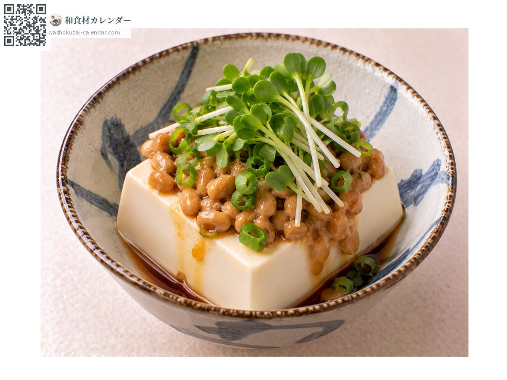

野菜
カイワレ
かいわれ
別名・別表記カイワレ大根、貝割れ大根、kaiware
旬の登録はありません

旬の時期
1月
2月
3月
4月
5月
6月
7月
8月
9月
10月
11月
12月
旬出回り
調理法

刺身のつま
根を落として添える。ぴりりとした辛味が魚に合う。

サラダ
生のまま散らす。彩りと辛味を添える。

肉巻き
豚肉で巻いて焼く。食感の対比が生きる。

和え物
納豆や豆腐と合わせる。香りが立つ。
選び方
双葉が濃い緑で開いており、茎が白くまっすぐなもの。しおれていないもの。
保存方法
根元のスポンジを湿らせたまま冷蔵。切ったものは当日中に使い切る。
主な産地
豆知識
大根の芽のこと。双葉の形が二枚貝の殻が開いた姿に似ることから「貝割れ」と呼ばれる。成長した大根より辛味成分が多く、刺身のつまに使われるのは彩りだけでなく殺菌の意味もある。